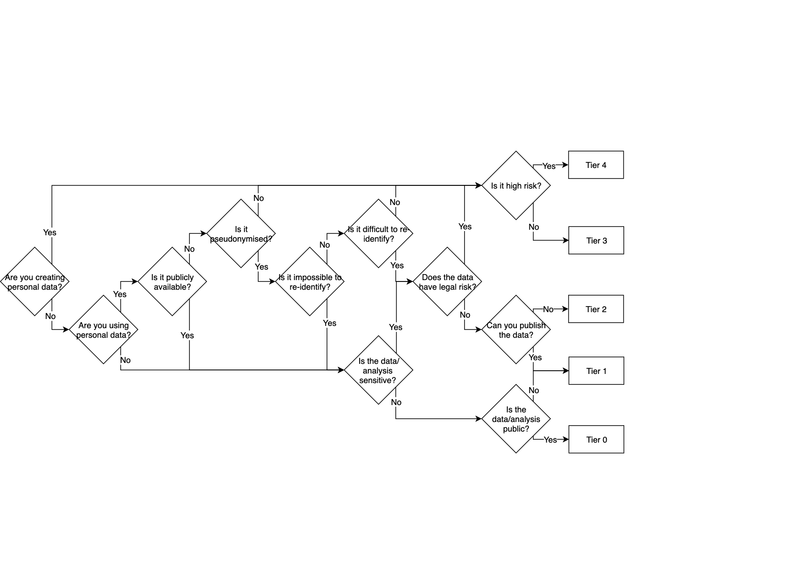

Classifying sensitive data¶
Why classify data?¶
One of the major drivers for usability or security problems is over- or under-classification, that is, treating data as more or less sensitive than it deserves.
Regulatory and commercial compliance requirements place constraints on the use of datasets; implementation of that compliance must be set in the context of the threat and risk profile and balanced with researcher productivity.
Almost all security measures can be circumvented, security can almost always be improved by adding additional barriers, and improvements to security almost always carry a cost in usability and performance.
Misclassification is seriously costly for research organisations and their partners: overclassification results not just in lost researcher productivity, but also a loss of scientific engagement, as researchers choose not to take part in a project with cumbersome security requirements. Systematic overclassification increases data risk by encouraging workaround breach.
The risks of under-classification include not only legal and financial sanction, but the loss of the social licence to operate of the whole community of data science researchers.
Document structure¶
This document describes our approach to handling research data. It does not cover the Turing’s core enterprise information security practices, which are described elsewhere. Nor do we cover the data-centre level or organisational management security practices which are fundamental to any secure computing facility - we do not operate our own data centres, but rely on upstream data centre provision, such as Microsoft Azure and the Edinburgh Parallel Computing Centre, compliant with ISO 27001 (Information Security Management System Requirements).
The document is structured as follows: we begin by defining terms which are used throughout the document. We then discuss some aspects of the design, before describing our ‘model’ for secure research Environments. Next, we discuss the possible choices for each security control around each of the areas bullet-pointed above, while leaving open the question of which controls are appropriate at which tiers. Finally, we make specific choices assigning controls to security tiers.
Definitions - a model for secure data research projects¶
Work Packages¶
Assessing the sensitivity of a dataset requires an understanding of both the base sensitivity of the information contained in the dataset and of the impact on that base sensitivity of the operations that it will undergo in the research project. The classification exercise therefore relates to each stage of a project and not simply to the datasets as they are introduced into it.
Classification to a tier is therefore not a property of a dataset, because a dataset’s sensitivity depends on the data it can be combined with, and the use to which it is put.
In our model, projects are divided into work packages, which we use here to refer to the activities carried out within a distinct phase of work carried out as part of a project, with a specific outcome in mind. A work package can make use of one or more datasets, and includes an idea of the analysis which the research team intends to carry out, the potential outputs they are expecting, and the tools they intend to use – all important factors affecting the data sensitivity.
Classification is carried out on work packages rather than individual datasets.
Environments and Platforms¶
Once a work package has been classified, an appropriate secure analysis Environment is instantiated depending on the tier assigned.
For the initial work package in a project, a new Environment must always be deployed. For additional work packages, the project may deploy a new environment per work package or, where appropriate, add the new work package to an existing Environment deployed for the project.
When considering adding a work package to an existing environment, the combination of the new work package plus all existing work packages the Environment has already been used for must be considered as the effective work package when making classification decisions. The classification tier of a combination of work package(s) can never be lower than the highest classification tier of any of the individual work packages, but may be higher due to additional risks introduced by combining datasets and activities across work packages. If the combined classification is higher than the tier associated with the existing Environment, a new Environment must be deployed. The classification tier of an Environment cannot be upgraded or downgraded “in place”.
Depending on the classification assigned, an Environment may be instantiated on one of several supported Platforms. The Turing currently supports secure deployments to Microsoft’s Azure cloud platform.
Researcher¶
A project member, who analyses data to produce results. We reserve the capitalised term “Researcher” for this role in our user model. We use the lower case term when considering the population of researchers more widely.
Investigator¶
The research project lead, this individual is responsible for ensuring that project staff comply with the Environment’s security policies. A single lead Investigator must be responsible for a project. Multiple collaborating institutions may have their own lead academic staff, and academic staff might delegate to a researcher the leadership as far as interaction with the Environment is concerned. In both cases, the term Investigator here is independent of this - regardless of academic status or institutional collaboration, this individual accepts responsibility for the conduct of the project and its members.
Referee¶
A Referee volunteers to review code or derived data (data which is computed from the original dataset), providing evidence to the Investigator and Dataset Provider Representative that the researchers are complying with data handling practices. Referees also play a role in classifying work packages at Tiers 2 or above, when they should be consulted by either the research team or the Dataset Provider Representative (see below).
Dataset Provider and Representative¶
The Dataset Provider is the organisation who provided the dataset under analysis. The Dataset Provider will designate a single representative contact to liaise with the Turing. This individual is the Dataset Provider Representative. They are authorised to act on behalf of the Dataset Provider with respect to the dataset and must be in a position to certify that the Dataset Provider is authorised to share the dataset with the Turing.
There may be additional people at the Dataset Provider who will have input in discussions around data sharing and data classification. It is the duty of the Dataset Provider Representative to manage this set of stakeholders at the Dataset Provider.
Programme Manager¶
A designated staff member in the research institution who is responsible for creating and monitoring projects and Environments and overseeing a portfolio of projects. This should be a member of professional staff with oversight for data handling in one or more research domains.
The Programme Manager can add new users to the system and assign users to specific projects. They assign Project Managers and can, if they wish, take on this role themselves.
Project Manager¶
A staff member with responsibility for running a particular project. This role could be filled by the Programme Manager, or a different nominated member of staff within the research institution.
While the Programme Manager should maintain responsibility for adding users to the user list, and can add users to projects, the Project Manager should also have the authority to assign existing users to their project. To do this they will need to be able to review and search existing users.
System Manager¶
Members of Turing staff responsible for configuration and maintenance of the Environment.
Software-defined infrastructure¶
Our approach - separately instantiating an isolated Environment for each project - is made feasible by the advent of “software-defined infrastructure”.
It is now possible to specify a whole arrangement of IT infrastructure, servers, storage, access policies and so on, completely as code. This code is executed against web services provided by infrastructure providers (the APIs of cloud providers such as Microsoft, Amazon or Google, or an in-house “private cloud” using a technology such as OpenStack), and the infrastructure instantiated.
Our model therefore assumes the availability of a software-defined infrastructure provision offering, in an ISO 27001 compliant data-centre and organisation, the scripted instantiation of virtual machines, storage, and secure virtual networks.
We also assume that “Identification, Authorisation and Authentication” (IAA) is available as a service from this provider, so that they provide user account creation, the creation of security groups, the assignment of users to security groups, the restriction of access to resources by such users, login challenge by password and a second factor, password reset, and other such security considerations.
A software-defined infrastructure platform on which to build, means that the definition of the Environment can be meaningfully audited - as no aspect of it is not described formally in code, it can be fully scrutinised.
Secure data science¶
We highlight two assumptions about the research user community critical to our design:
Firstly, we must consider not only accidental breach and deliberate attack, but also the possibility of “workaround breach”, where well-intentioned researchers, in an apparent attempt to make their scholarly processes easier, circumvent security measures, for example, by copying out datasets to their personal device. Our user community are relatively technically able; the casual use of technical circumvention measures, not by adversaries but by colleagues, must be considered. This can be mitigated by increasing awareness and placing inconvenience barriers in the way of undesired behaviours, even if those barriers are in principle not too hard to circumvent.
Secondly, research institutions need to be open about the research we carry out, and hence, the datasets we hold. This is because of both the need to publish our research as part of our impact cases to funders, and because of the need to maintain the trust of society, which provides our social licence. This means we cannot rely on “security through obscurity”: we must make our security decisions assuming that adversaries know what we have, what we are doing with it, and how we secure it.
Environment Tiers¶
Our recommendation for secure information processing tiers is based on work which has gone before. We have begun with the UK government classifications, and reconciled these to the definitions of personal data, whether or not something is ‘special category’ under the GDPR or relates to criminal convictions, and related them to common activities in the research community.
Where input datasets contain personal data, consideration should always be given at the outset to minimising the personal data, including by pseudonymisation or anonymisation.
Pseudonymised data is still personal data, as it can be re-identified by those who hold the key to turn pseudonyms back into individual identifiers. This may include synthetic data derived from personal data, or models trained on personal data, depending on the methods used to synthesise the data or generate the models.
Anonymised data, including pseudonymised data where that key is destroyed, is not personal data when it is impossible to re-identify any living individuals from it. However, if the quality of anonymisation is ambiguous or if individuals can be identified when the anonymised data is combined with another dataset, such data would by definition not be anonymised, and would therefore be personal data. The question as to whether re-identification is possible or not is a very subtle one, and the assessment of this risk is critical to the assignment of security tiers.
We emphasise that this classification is based on considering the sensitivity of all information handled in the project, including information that may be generated by combining or processing input datasets. In every case, the categorisation does not depend only on the input datasets, but on combining information with other information or generated results in a work package.
Derived information may be of higher security tier than the information in the input datasets. (For example, information on the identities of those who are suspected to possess an undiagnosed neurological condition on the basis of analysis of public social media data.) This should form part of the information constituting a work package; when a project team believes this will be the case, the work package should be classified at the higher tier of secure Environment.
If it becomes apparent during the project that intended analysis will produce this effect then the inputs should be treated as a new work package with this extra information, and classified afresh, following the full classification process below. In the below, “personal data” follows the GDPR definition: information from which a living individual is identified or identifiable. It excludes information about individuals who are dead.
Classification workflow¶
Flowcharts demonstrating how we classify work packages can be seen here:
Detailed, full diagram
Show

Simplified, high-level diagram
Show

Tier 0¶
Tier 0 Environments are used to handle open information, which is legally available to the general public with no restrictions, where all generated and combined information is also suitable for open handling.
Tier 0 applies where none of the information processed, combined or generated includes personal data, commercially sensitive data, or data which will have legal, political or reputational consequences in the event of unauthorised disclosure.
Tier 0 environments may be used for anonymised or synthetic information generated from personal data, where one has absolute confidence in the quality of anonymisation or the privacy preserving nature of the data synthesis. This makes the information no longer personal data. This does not include pseudonymised data which can be re-identified in combination with a key or other dataset. This is still considered personal data.
Note that in practice it is extremely difficult (if not impossible) to guarantee that data is truly anonymous, especially when considering the risk of the anonymised data being linked with other datasets that currently exist or may exist in the future, and the potential development of more sophisticated re-identification attacks.
If there is not absolute confidence in the anonymous or synthetic data no longer being personal data, then the minimum tier environment this data can be processed in is Tier 2.
Tier 0 data should be considered ready for publication. Although this data is open, there are still advantages to handling it through a managed data analysis infrastructure.
Management of Tier 0 data in a visible, well ordered infrastructure provides confidence to stakeholders as to the handling of more sensitive datasets.
Although analysis may take place on personal devices or in non-managed cloud-based analysis Environments, the data should still therefore be listed through the inventory and curatorial systems of a managed research data Environment.
Finally, audit trails as to the handling of Tier 0 information reduce risks associated with misclassification - if data is mistakenly classified as a lower tier than it should be, we still retain information as to how it was processed during the period of misclassification.
Tier 1¶
Tier 1 Environments are used to handle, process and generate data that is intended for eventual publication or that could be published without reputational damage.
Information is kept private in order to give the research team a competitive advantage, not due to legal data protection requirements.
Both the datasets and the proposed processing must otherwise meet the criteria for Tier 0.
It may be used for pseudonymised or synthetic information generated from personal data, where one has absolute confidence that the personal data cannot be re-identified.
It may also be used for commercial data where commercial consequences of disclosure would be no impact or very low impact, with the agreement of all parties.
Relationships to other classification schemes¶
Pseudonymised data is considered Personal Data under the GDPR. Anonymised data is not considered Personal Data under the GDPR, but in practice it is extremely difficult (if not impossible) to guarantee that data is truly anonymous. Therefore, unless we are absolutely confident in the anonymisation process, we consider all data related to living individuals as Personal Data under the GDPR and therefore at least Tier 2.
In particular, Tier 1 is not suitable for any data derived from personal data that is not otherwise suitable for processing in Tier 0. If this is not the case, then the minimum tier environment such data can be processed in is Tier 2.
Tier 2¶
Tier 2 Environments are used to handle, combine or generate information which is not linked to identifiable personal data.
It may be used for pseudonymised, synthetic or anonymised information generated from personal data, where we have strong, but not absolute, confidence that the personal data cannot be re-identified. This assessment should consider the risk of processing the data in a manner that permits personal data to be re-identified, including by combining it with other data available within the environment.
The pseudonymisation, synthesis or anonymisation process itself, if carried out in the Turing, should take place in a Tier 3 Environment. A typical model for a project will be to instantiate both Tier 2 and Tier 3 Environments, with pseudonymised, synthetic or anonymised data generated in the Tier 3 Environment and then transferred to the Tier 2 Environment.
Tier 2 Environments are also used to handle, combine or generate information which is confidential but not, in commercial or national security terms, sensitive. This includes commercial-in-confidence datasets or intellectual property where the legal, commercial, political and reputational consequences from disclosure are low. Where such consequences are not low, Tier 3 should be used.
At Tier 2, the most significant risks are “workaround breach” and the risk of mistakenly believing data is robustly pseudonymised or anonymised, when in fact re-identification might be possible.
Relationships to other classification schemes¶
Almost all data at the baseline UK government OFFICIAL classification is likely to be Tier 2, as well as a large proportion of data at the OFFICIAL-SENSITIVE [COMMERCIAL] classification.
All pseudonymised Personal Data under the GDPR that is not Special Category Personal Data is Tier 2. Note that pseudonymised data is Personal Data under the GDPR. While anonymised data is not considered Personal Data under the GDPR, in practice it is extremely difficult (if not impossible) to guarantee that data is truly anonymous. Therefore, unless we are absolutely confident in the anonymisation process, we consider all data related to living individuals as Personal Data under the GDPR.
Tier 3¶
Tier 3 Environments are used to handle, combine or generate personal data, excluding personal data where there is a risk that disclosure might pose a substantial threat to the personal safety, health or security of the data subjects (which would be Tier 4).
This also includes pseudonymised, synthetic or anonymised information generated from personal data, where we have only weak confidence that the personal data cannot be re-identified.
Tier 3 Environments are also used to handle, combine or generate information, including intellectual property, which is sensitive in commercial, legal, political, or national security terms. This tier anticipates the need to defend against compromise by attackers with bounded capabilities and resources. This may include hacktivists, single-issue pressure groups, investigative journalists, competent individual hackers and the majority of criminal individuals and groups. The threat profile excludes sophisticated, well-resourced and determined threat actors, such as highly capable serious organised crime groups and state actors.
The difference between Tier 2 and Tier 3 Environments is the most significant in this model, both for researcher productivity and organisational risk.
At Tier 3, the risk of hostile actors attempting to break into the Environment becomes significant.
Relationships to other classification schemes¶
All data at the UK government OFFICIAL-SENSITIVE [PERSONAL] classification will be Tier 3, as well as some data at the OFFICIAL-SENSITIVE [COMMERCIAL] classification, where the consequence of disclosure are particularly high.
All pseudonymised Special Category Personal Data under the GDPR is Tier 3.
All non-pseudonymised Personal Data under the GDPR, whether or not it is Special Category Personal Data is Tier 3.
Tier 4¶
Tier 4 Environments are used to handle, combine or generate personal data where disclosure poses a substantial threat to the personal safety, health or security of the data subjects.
This also includes handling, combining or generating datasets which are sensitive in commercial or national security terms, and are likely to be subject to attack by sophisticated, well-resourced and determined actors, such as serious organised crime groups and state actors.
It is at Tier 4 that the risk of hostile actors penetrating the project team becomes significant.
Relationships to other classification schemes¶
All data at the UK government SECRET classification will be Tier 4.
The classification process¶
The Dataset Provider Representative and Investigator must agree on a classification for each work package. If the classification is likely to be Tier 2 or higher, they should also involve an independent Referee. Prior to datasets being transfered to the Turing, only the Dataset Provider Representative will have access to the actual dataset(s). The Investigator (and Refereee if necessary) will need to make their classification judgements based on discussions with the Dataset Provider Representative, alongside a clear description of the dataset and associated metadata such as data dictionaries.
The Dataset Provider Representative, Investigator and Referee (if applicable) should independently classify the work package using the classification web application or classification flowchart. If the flowchart is used, the full path of decisions made should be recorded, not just the final outcome. If the web application is used, this is done automatically.
The project should only proceed if the Investigator, the Dataset Provider Representative, and the Referee (if applicable), can come to a consensus on a work package classification. If consensus cannot be reached, the work package should be reconsidered.
The Turing does not currently have access to a Tier 4 Environment. Therefore, if the work package classification is Tier 4, it should be reconsidered.
If the classification is Tier 3 or below, the dataset(s) should be ingressed into an Environment at that Tier to which the Investigator and Referee (if applicable) have access, so that they can verify the classification based on complete information. If at this point either the Investigator or Referee disagree with the original classification, the consensus seeking process between the Data Provider Representative, Investigator and Referee (if applicable) should be repeated. If consensus cannot be achieved the dataset(s) must be deleted from the Environment.
If, at any point during the project, the research team decides to analyse the data differently or for a different purpose than previously agreed, this constitutes a new work package, and should be newly classified by repeating this process. This is also the case if the team wishes to ingress another dataset in combination, which will require Representatives from all Dataset Providers to arrive at the same consensus as the Investigator and Referee (if applicable).